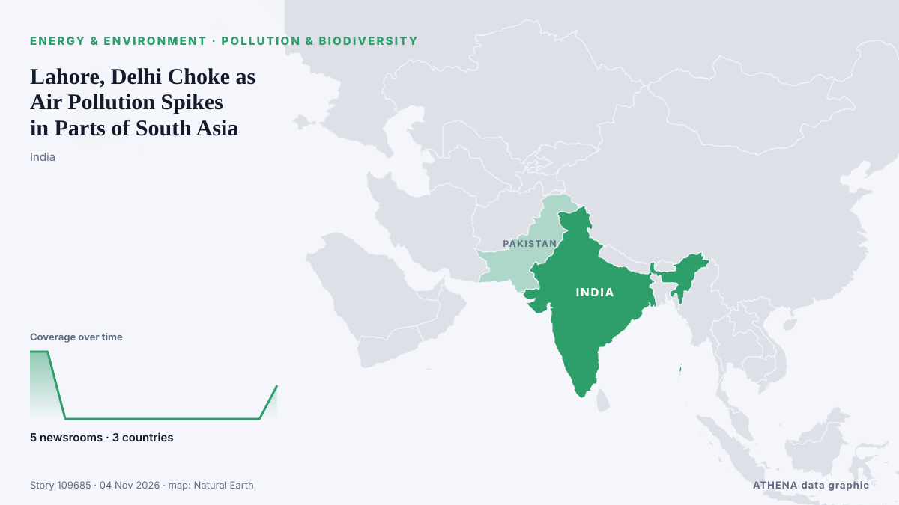

Ρύπανση & βιοποικιλότητα
ΧορηγούμενοΠαρουσιάζεται από  Cybernetics and Artificial Intelligence Lab Welcome to the Cybernetics and Artificial Intelligence Laboratory, established at the Department of Business Administration of the National and Kapodistrian University of Athens. The lab is headed by Professor Dimitrios Thomakos. The lab aims to do research that can be published in top venues. Our research uses tools and methods of Artificial Intelligence, and lies in the following areas: - Forecasting - Decision making - Cyber security - Finance We are always looking forward to collaborating with exceptional students!
Cybernetics and Artificial Intelligence Lab Welcome to the Cybernetics and Artificial Intelligence Laboratory, established at the Department of Business Administration of the National and Kapodistrian University of Athens. The lab is headed by Professor Dimitrios Thomakos. The lab aims to do research that can be published in top venues. Our research uses tools and methods of Artificial Intelligence, and lies in the following areas: - Forecasting - Decision making - Cyber security - Finance We are always looking forward to collaborating with exceptional students!
| 22 Οκτ | 0 |
|---|---|
| 23 Οκτ | 0 |
| 24 Οκτ | 0 |
| 25 Οκτ | 0 |
| 26 Οκτ | 0 |
| 27 Οκτ | 0 |
| 28 Οκτ | 0 |
| 29 Οκτ | 0 |
| 30 Οκτ | 1 |
| 31 Οκτ | 3 |
| 1 Νοε | 2 |
| 2 Νοε | 5 |
| 3 Νοε | 6 |
| 4 Νοε | 1 |
Οι τίτλοι των ειδήσεων παρουσιάζονται στα αγγλικά, όπως δημοσιεύτηκαν.

Lahore, Delhi Choke as Air Pollution Spikes in Parts of South Asia
Air pollution becomes a severe problem for the region around this time of the year when cold, dense air traps emissions, pushing pollution levels to the highest in the world and exposing residents to… από CNA (Channel NewsAsia)
Troubles Bill debate ‘toxic’ and pitted veterans against victims – commissioner
Joe McVey also said people affected by the Troubles have been ‘betrayed’ and ‘forgotten’ by successive governments. από Evening Standard (London)
Rio Tinto backs $20 million effort to stop Pilbara cane toads
Rio and its mining partners will fund a vast conservation corridor in Western Australia to shield vulnerable species . από MINING.COM
Belize calls for increased International funding to protect Biodiversity at COP17
By Zoila Palma: Belize has reaffirmed its commitment to biodiversity conservation and sustainable development while calling for stronger international support to help countries protect their natural… από Breaking Belize News
Singapore to push for stronger action against haze as 2027 ASEAN chair
Singapore will ratify an agreement to establish a regional haze control centre in Indonesia, after Jakarta declined its offer of firefighting assistance in October. από CNA (Channel NewsAsia)
Gold Fields wins Québec approval for Windfall project construction
Gold Fields and its fully owned subsidiary Windfall Mining Group have secured Québec environmental approval to commence construction at the Windfall mining project in Eeyou Istchee Baie-James, Canada. από Mining Technology
UK ministers told not to engage formally with Indian mega-zoo after lobbying
Guardian and Mongabay reveal approaches to officials and MPs on behalf of Vantara zoo ahead of UK-chaired Cites meeting on endangered animal imports British government ministers were told not to… από The Guardian
Venomous Indonesian primate feared extinct still clings on – but threats persist
A small, venomous primate that scientists thought had gone extinct still survives on Indonesia’s Bangka Island, and to the communities there was never really “lost,” according to a recent study. από Mongabay
Four Containers Spotted Drifting East of Burgas Bay
Four containers were spotted drifting in Burgas Bay, possibly linked to the sunken Contship Jet, raising concerns over hazardous materials. από SeaNews Türkiye
Africa: COP17 - Nations Chart 'Yerevan Pathway' to Speed Up Action for Nature
[UN News] At the halfway mark to 2030, countries meeting in Armenia have agreed a roadmap to accelerate action for nature, after a global review found the world off track to meet its biodiversity… από AllAfrica
New restrictions kick in as Delhi battles pollution
Authorities in New Delhi stepped up anti-pollution measures on Sunday, including higher parking fees and work-from-home orders, seeking to curb toxic smog in one of the world's mo... από Oman Observer
Haze probe: Five Singapore-registered companies agree to engage assessors
The five companies also agreed to cooperate with assessors from the Panel on Transboundary Haze, says the National Environment Agency. από CNA (Channel NewsAsia)
Beavers to return to waters around Loch Ness 500 years after last sighting
Beavers could soon be reshaping this river's ecosystem. από The Herald (Scotland)